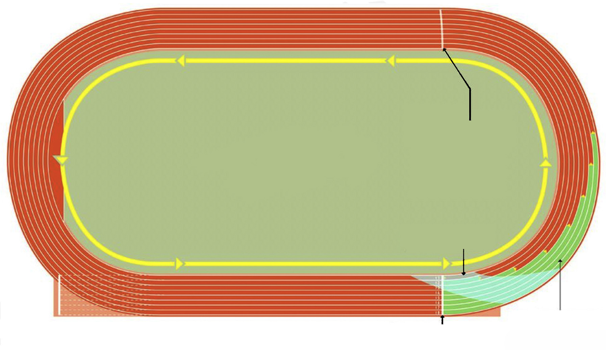

Finishing 4x100 m relay
The relay ends when the final runner in a team crosses the finishing line with any part of the body including the trunk. Usually, the fastest runner in each group has a duty to finish the last portion of the 4x100 m relay with the baton on the hand.
The 4x400 m relay
In this race, each runner in a team is required to cover a 400 m distance while holding a baton. The first runner runs in the same lane throughout 400 m. The second runner is allowed to break into the inner lane after the completion of the first 100 m. The third and fourth runners are free to run in any lane of the track to complete the race. The visual baton exchange is used throughout the race.
The baton exchange between incoming and outgoing runner is done at the exchanging zone marked by 20 m and the 10 m mark acceleration zone prior to the exchanging zone, as shown in Figure 5.11. The phases involved in 4x400 m relay are starting, running, baton exchange and finishing.

BREAK LINE
EXCHANGE ZONE
STAGGERED
START/FINISH START
Figure 5.11: Starting and baton exchange zones in 4x400 m relay
Starting 4x400 m relay
In 4x400 m relay, the starting blocks are placed closer to the outer curve line of the track. The first runner holds the baton between the index finger and the thumb enclosed by other fingers. The runner is positioned at the lane in a crouch start waiting for the starting command as in 100 m sprint. The first leg runner gets off the starting block and covers a distance of 400 m before the second, the third and the fourth leg runners.